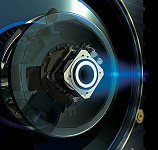

Accueil > Mots-clés > Glossaire > SMART-1
SMART-1
SMART-1 est une sonde propulsée au moyen d’un moteur ionique. Elle sertde preuve technologique pour démontrer la possibilité de fabriquer des sondes moins coûteuses.

Cette sonde est resté 5000h en fonctionnement en consommant seulement 60l
de xénon pour aller de l’orbite de la Terre jusqu’à la Lune.